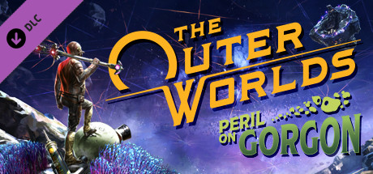
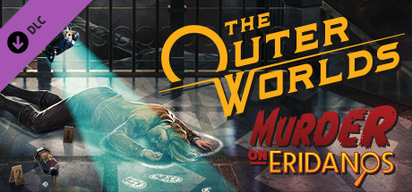

Oyun Dünyası Kendi Dilinizde.
Hikaye odaklı oyunları orijinal atmosferine ve karakter üsluplarına birebir sadık kalarak Türkçeye kazandırıyoruz. Tamamen ücretsiz, reklamsız ve oyuncular için.
KATALOG
Tüm Çeviri Projelerimiz

The Outer Worlds Spacer's Choice Edition
Obsidian'ın Halcyon kolonisi bilimkurgu RPG başyapıtı. 71.345 metin girdisi, 1.272 tablo, özel Türkçe fontlar ve Peril on Gorgon + Murder on Eridanos DLC'leri 6 fazlı adli kalite kontrolden geçirilerek eksiksiz Türkçeleştirildi.

The Expanse Telltale Series
Camina Drummer ve Chrisjen Avasarala ile Güneş Sistemi'nin kaderini belirleyin. Tüm ana hikaye ve Archangel DLC'si eksiksiz Türkçeleştirildi.

Code Vein Bandai Namco
Kıyamet sonrası distopyada Dirilmişler (Revenant) ile kan ve kayıp hafıza arayışı. 25.472 satır, tüm ana hikaye, ara sahneler, silahlar, Kan Kodları ve 3 büyük DLC paketi eksiksiz Türkçeleştirildi.

Evil West Flying Wild Hog / Focus
Karanlık bir vampir tehdidi Amerikan sınırını ele geçirirken, Jesse Rentier olarak insanlığın son savunma hattı olun. Tüm ana hikaye senaryosu, ara sahneler, arayüz ve cephanelik Atilla Çeviri güvencesiyle Türkçeleştiriliyor.
Sıradaki Oyun Ne Olsun?
Evil West'ten sonra Türkçeye kazandırılmasını istediğiniz hikaye odaklı oyun önerilerinizi bize iletebilirsiniz.
THE OUTER WORLDS SPACER'S CHOICE EDITION %100 Türkçe Yerelleştirme
Obsidian Entertainment'ın hiciv dolu uzay RPG başyapıtını tüm genişleme paketleriyle ana dilinizde deneyimleyin. Halcyon kolonisinin keskin şirket ironileri, yoldaş diyalogları, terminaller, kodeks kayıtları ve eşyalar 6 fazlı adli kalite kontrol sürecinden geçirilerek sıfır hatayla Türkçeye kazandırıldı.
71.345 metin girdisinin tamamı orijinal İngilizce kaynaklarla 1:1 karşılaştırılarak denetlendi; 2.122'den fazla hedefli düzeltme (OEI motor etiketleri, kritik görev parolaları, kesilen terminal metinleri, deyimler ve özel isim çekimleri) uygulandı.
Dahil Edilen Genişleme Paketleri (DLC)
Spacer's Choice Edition ile gelen iki büyük hikâye genişleme paketi %100 Türkçedir

Peril on Gorgon
Gorgon asteroitindeki gizli Adrena-Time deneyleri, terk edilmiş laboratuvar günlükleri, yeni bilim silahları ve Spacer's Choice'un karanlık geçmişi eksiksiz Türkçeleştirildi.

Murder on Eridanos
Grand Colonial Oteli'ndeki gizemli Halcyon Helen cinayeti, Tutarsızlık Büyüteci ipuçları, Rizzo's laboratuvarları ve dedektiflik sorgulamaları eksiksiz Türkçeleştirildi.
The Outer Worlds: Yapılan En Son Değişiklikler
71.345 Metin Girdisi ve 1.272 Tablonun %100 Yerelleştirilmesi BaseGame + 2 DLC
Ana oyun (770 tablo / 48.862 girdi), Peril on Gorgon (214 tablo / 10.451 girdi) ve Murder on Eridanos (288 tablo / 12.032 girdi) dâhil oyunun tüm diyalog, görev, kodeks, eşya, harita ve arayüz veritabanı sıfır eksikle Türkçeleştirildi.
6 Fazlı Kapsamlı Adli Kalite Kontrol ve 2.122+ Hedefli Düzeltme Faz 1 – Faz 6 QC
GUI, Kodeks, Eşyalar, Görevler, Ana Diyaloglar ve DLC metinleri 6 ayrı kalite kontrol aşamasından geçirildi; satır sonu hizalamaları (CRLF), kadın/erkek karakter seslendirme uyumu ve terminoloji tutarlılığı %100 sertifikalandırıldı.
Özel Türkçe Karakter Destekli Font Paketi Entegrasyonu Tipografi
Oyunun orijinal fontlarında eksik olan Türkçe harfler (ğ, ü, ş, ı, İ, ö, ç) için OBSTOW_Bold, TCM_Bold ve TCM_Regular font aileleri yeniden derlenip pakete dâhil edildi.
OEI Motor Etiketleri & Kritik Görev Parolaları %100 Güvenlik Doğrulaması Sıfır Token Hatası
Gladys ve DLC2 ödeme/rüşvet seçeneklerindeki <oeiglobal> / <oeitoken> değişkenleri sıfır sözdizimi hatasıyla düzeltildi; Cascadia laboratuvar giriş parolası (ANTEDILUVIAN) gibi görev kilitleyebilecek kodlar aslına uygun korundu.
Kesilen Terminal Günlükleri, Evren Terminolojisi ve Deyim Revizyonu Editöryal Denetim
Eridanos Slug Lab kesik araştırma günlüğü ve kolluk terminalleri baştan çevrildi; Grand Colonial Oteli, Primal, Sub-Lighter, kimyasal kazan bulmacası ve Junlei/Adelaide/Jolicoeur özel isim çekimleri tüm oyunda tektipleştirildi.
Tek Parça Tak-Çalıştır PAK Mimarisi Teknik Altyapı
3 ana lokalizasyon paketi ve 3 özel Türkçe font ailesi tek bir pakchunk0-WindowsNoEditor_Turkish_P.pak dosyasında (3.6 MB ZIP) birleştirildi; harici program veya kurulum aracı gerektirmez ve başarımları etkilemez.
🪐 The Outer Worlds: Kurulum Kılavuzu
ZIP'i İndirin
TheOuterWorlds_SpacersChoice_Turkce_Yama_v1.0_AtillaCeviri.zip dosyasını indirin ve bir klasöre çıkartın.
Paks Klasörüne Kopyalayın
İçinden çıkan pakchunk0-WindowsNoEditor_Turkish_P.pak dosyasını oyunun Indiana\Content\Paks\ klasörüne yapıştırın.
Oyunu Başlatın
Oyunu Steam veya Epic Games üzerinden açın; Türkçe yama, 2 DLC çevirisi ve özel Türkçe fontlar otomatik olarak devreye girecektir.
C:\Program Files (x86)\Steam\steamapps\common\The Outer Worlds Spacer's Choice\Indiana\Content\Paks\
C:\Program Files\Epic Games\TheOuterWorldsSpacersChoiceEdition\Indiana\Content\Paks\
pakchunk0-WindowsNoEditor_Turkish_P.pak dosyasını silmeniz yeterlidir.
The Expanse: A Telltale Series %100 Türkçe Yerelleştirme
Telltale Games ve Deck Nine ortaklığıyla geliştirilen bu uzay macerasını ana dilinizde deneyimleyin. The Expanse dizi evrenine, Lang Belta aksanına ve karakterlerin özgün tonlarına sadık kalınarak hazırlanmıştır.
Bu çalışma; bağlamdan yoksun, denetimsiz otomatik çeviri araçlarının (ham makine çevirisi) aksine, ileri düzey dil modelleri ile doğrudan editöryal denetimi birleştiren hibrit bir yerelleştirme metodolojisiyle hazırlanmıştır.

Hikaye ve Karakterler
Kartlara tıklayarak veya üzerine gelerek arka planı dinamik olarak değiştirebilirsiniz

Camina Drummer
Korsan baskınları, uzay boşluğunda enkaz arayışı ve mürettebatın isyan tehlikesi. Yaptığınız her kritik seçim hikayenin sonunu doğrudan şekillendirir.

Chrisjen Avasarala
Dünya ve Mars arasındaki barışı korumak için Dünya'nın derinliklerinde siyasi entrikalar, delege pazarlıkları ve yüksek tansiyonlu kriz yönetimi.
The Expanse: Yapılan En Son Değişiklikler
Diyalog Tonu ve Karakter Samimiyeti İyileştirmesi Bölüm 4 & 5
Doktor Virgil ile Camina Drummer arasındaki sahnelerde kullanılan resmi ("siz / biz") kalıplar baştan sona revize edildi; karakterlerin derin dostluğuna ve hikaye atmosferine uygun samimi ("sen") diline dönüştürüldü.
Archangel DLC Seçim Metni ve İmla Düzeltmesi Archangel DLC
Chrisjen Avasarala ek paketinde yer alan kritik karar ekranındaki yazım hatası ("Annini dinle" → "Anneni dinle") düzeltildi ve tüm seçim butonları görsel standartlara uyarlandı.
Hızlı Altyazı ve Ses Senkronizasyon Ayarlamaları Tüm Bölümler
Oyunun Wwise ses motoruna bağlı olarak ekranda çok hızlı geçen altyazılar tespit edildi; Türkçe cümle uzunlukları seslendirme süreleriyle senkronize olacak şekilde sıkılaştırıldı ve okuma kolaylığı sağlandı.
Zen IoStore ve Legacy Pak Motoru Sıfır Hata Doğrulaması Teknik Altyapı
39 yerelleştirme dosyasının tamamı Unreal Engine 4.27 standartlarında derlendi. Steam ve Epic Games sürümlerinde çökme yapmayan çift katmanlı paket mimarisi (2.5 MB) hazırlandı.
Lang Belta ve Belter Kültürel Terim Bütünlüğü Evren Terminolojisi
Kemerli (Belter) argo ve deyimleri The Expanse dizi külliyatıyla tam uyumlu hale getirildi; "beratna", "sasa ke", "pampa", "bosmang" gibi ikonik ifadeler bağlamına göre korundu veya Türkçeleştirildi.
Oyundan Türkçe Ekran Görüntüleri
Görselleri büyütmek için üzerlerine tıklayabilirsiniz


🛠️ The Expanse: Kurulum Kılavuzu
ZIP'i İndirin
Sitemizden indirdiğiniz TheExpanse_Turkce_Yama_AtillaCeviri.zip dosyasını bir klasöre çıkartın.
Artemis Klasörünü Kopyalayın
İçinden çıkan Artemis klasörünü kopyalayıp oyunun kurulu olduğu ana dizine yapıştırın.
Oyunu Başlatın
Oyunu Steam veya Epic üzerinden açın; yama otomatik olarak devreye girecektir.
C:\Program Files (x86)\Steam\steamapps\common\TheExpanseATelltaleSeries\
CODE VEIN %100 Türkçe Yerelleştirme
Bandai Namco'nun kıyamet sonrası aksiyon RPG başyapıtı Code Vein'i tamamen Türkçe oynayın. Dirilmişler, Yitmişler, Mistle, Kan Peçeleri ve derin hafıza lore'u baştan sona eksiksiz çevrildi. Oyunun karanlık ve epik vampir atmosferine, anime estetiğine ve derin hikâye örgüsüne tam uyumlu bir deneyim sunar.
Bu çalışma; bağlamdan yoksun, denetimsiz otomatik çeviri araçlarının (ham makine çevirisi) aksine, ileri düzey dil modelleri ile doğrudan editöryal denetimi birleştiren hibrit bir yerelleştirme metodolojisiyle hazırlanmıştır.
Code Vein: Yapılan En Son Değişiklikler
25.472 Satırlık Kapsamlı Veritabanı ve 59 Namespace Yerelleştirmesi v1.0 Tam Sürüm
Oyunun tüm metin havuzu (kullanıcı arayüzü, ana hikâye, sinematikler, Kan Kodları, Yetenekler, Kan Peçeleri, silahlar ve eşya açıklamaları) sıfır eksik satırla Türkçeleştirildi.
Tüm DLC Paketleri Eksiksiz Entegre Edildi 3 Büyük DLC
Hellfire Knight (Cehennem Ateşi Şövalyesi), Frozen Empress (Buzlar İmparatoriçesi) ve Lord of Thunder (Yıldırım Efendisi) eklentilerinin tüm boss diyalogları, bellek kalıntıları ve meydan okuma gereksinimleri eksiksiz olarak pakete dahil edildi.
Ham Makine Çevirisi Hataları ve Yanıltıcı Çeviriler Ayıklandı Kalite Kontrol
Ham makine çevirilerinde görülen absürt terimler ("poll" yerine "bir anket", "white goods" yerine "Beyaz Eşya", "vestige" yerine "gelir hakları/yelek") tespit edilerek oyunun karanlık vampir/anime fantezisi atmosferine uygun terimlerle ("Gözlem Anketi/Pusula Noktası", "Kalıntı Parçası/Bellek", "Lüks Eşyalar") tamamen yenilendi.
Ara Sahne ve Diyalog Zamanlama Senkronizasyonu Altyazı Düzeltmeleri
Orijinal oyun dosyalarında bulunan 1 satırlık kaymalar (off-by-one ID shift) tek tek analiz edilerek diyalogların konuşan karakterlerle ve sinematik animasyonlarla %100 örtüşmesi sağlandı.
Io Yoldaş Diyaloğu ve Karakter Üslubu İyileştirmesi Karakter Düzenlemesi
Io'nun Base03 yürüyüş sahnesindeki aceleci çevirisi ("Acelemiz yok, yavaşça gidebiliriz.") olarak düzeltildi; Louis, Yakumo, Mia, Jack ve Eva gibi tüm yoldaşların ses tonlarına uygun editöryal üslup sağlandı.
Tek Parça Tak-Çalıştır Pak Dağıtımı Teknik Altyapı
pakchunk0-WindowsNoEditor__TurkishFull_P.pak (1.4 MB ZIP) mimarisiyle hiçbir harici enjektör veya mod yöneticisi gerektirmeden Steam sürümüne tam uyumlu, çökmesiz ve başarımları engellemeyen kompakt paket sunuldu.
Code Vein — Türkçe Ekran Görüntüleri
Görselleri büyütmek için üzerlerine tıklayabilirsiniz


🗡️ Code Vein: Kurulum Kılavuzu
ZIP'i İndirin
CODE_VEIN_Turkce_Yama_v1.0_AtillaCeviri.zip dosyasını indirin ve klasöre çıkartın.
Paks Klasörüne Kopyalayın
pakchunk0-WindowsNoEditor__TurkishFull_P.pak dosyasını oyunun Content\Paks\ klasörüne atın.
Oyunu Başlatın
Oyunu Steam üzerinden başlatın; Türkçe yama ve DLC çevirileri otomatik olarak devreye girecektir.
C:\Program Files (x86)\Steam\steamapps\common\CODE VEIN\CodeVein\Content\Paks\
EVIL WEST %100 Türkçe Yerelleştirme Projesi
Karanlık bir tehdit Amerikan sınırını yutarken, gizli bir vampir avcısı enstitüsünün son saha ajanlarından biri olan Jesse Rentier olarak insanlığın son savunma hattısınız. Flying Wild Hog ve Focus Entertainment imzalı bu vahşi batı & doğaüstü gotik aksiyon başyapıtı, Atilla Çeviri standartlarında Türkçeye kazandırılıyor!
Tıpkı The Expanse, Code Vein ve The Outer Worlds'te olduğu gibi; Jesse Rentier'ın sert kovboy mizacı, Rentier Enstitüsü'nün bilimsel ve askeri jargonu ile gotik yaratık terminolojisi el emeği editöryal denetimle Türkçeye aktarılacaktır.
Ana Senaryo & Diyaloglar
Jesse Rentier, Edgar Gravenor ve tüm saha ekibinin sinematik hikaye konuşmaları, telsiz anonsları ve görev diyalogları eksiksiz Türkçeleştirilecek.
Cephanelik & Eldiven
Elektrikli Rentier Eldiveni geliştirmeleri, altıpatlar, av tüfeği, alev makinesi, kombo yetenekleri ve tüm arayüz terimleri özenle yerelleştirilecek.
Arşiv Notları & Lore
Vahşi Batı'daki gizli vampir kovanları, Rentier Enstitüsü gizli dosyaları ve haritada toplanabilir tüm mektuplar/belgeler Türkçeye kazandırılacak.
BİZ KİMİZ?
Atilla Çeviri Hakkında
Atilla Çeviri, Türk oyuncuların hikaye odaklı oyunları kendi ana dillerinde en yüksek edebi ve atmosferik kaliteyle deneyimleyebilmesi amacıyla kurulmuş bağımsız bir gönüllü inisiyatifidir.
Çevirilerimizin hiçbirinde ticari kazanç gözetilmez; abonelik sistemi, reklam veya bağış zorunluluğu bulunmaz.
Bu sitede yayınlanan tüm çalışmalar; bağlamdan yoksun, denetimsiz otomatik çeviri araçlarının (ham makine çevirisi) aksine, ileri düzey dil modelleri ile doğrudan editöryal denetimi birleştiren hibrit bir yerelleştirme metodolojisiyle hazırlanmıştır. Her metin oyun içi bağlam, karakter üslubu ve terminoloji tutarlılığı gözetilerek titizlikle denetlenmektedir.